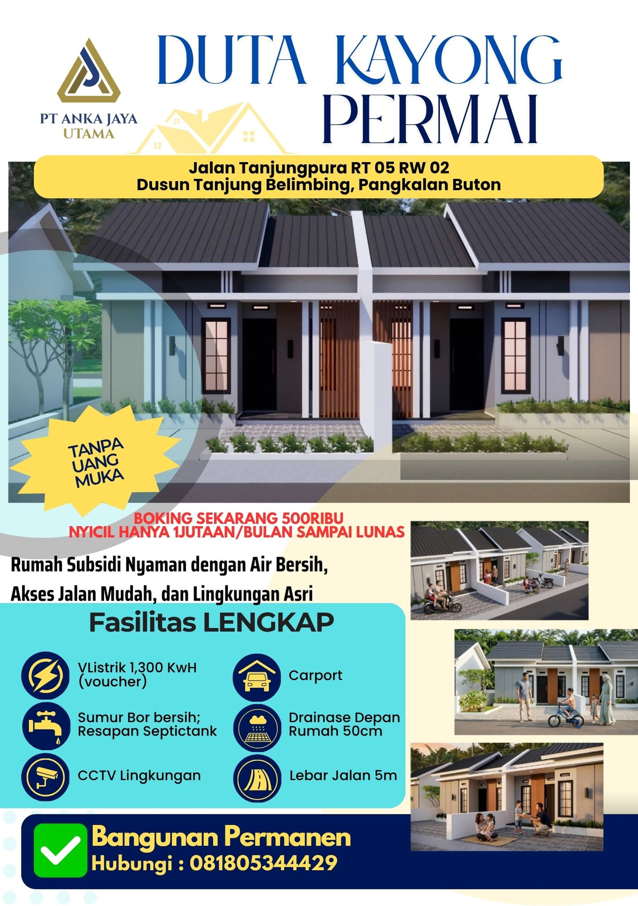
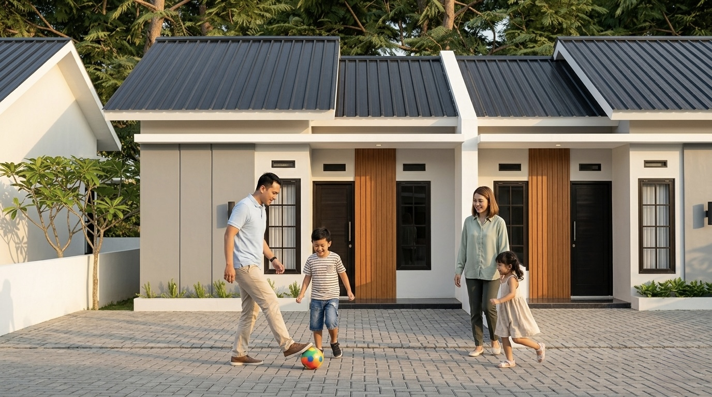
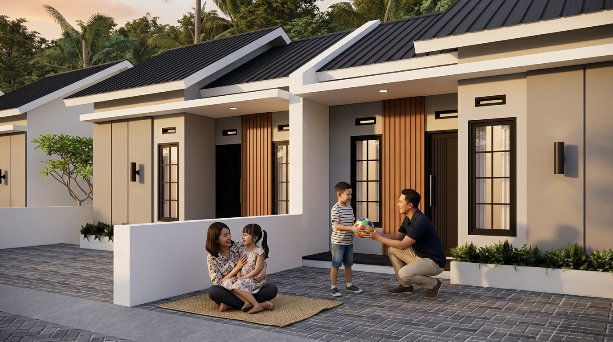
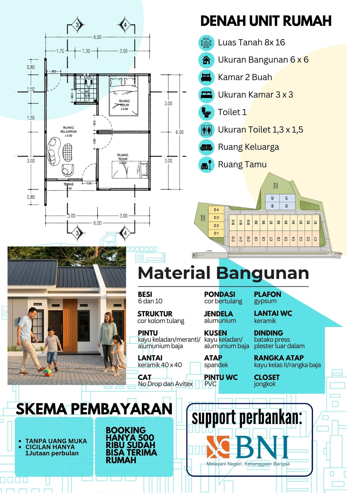
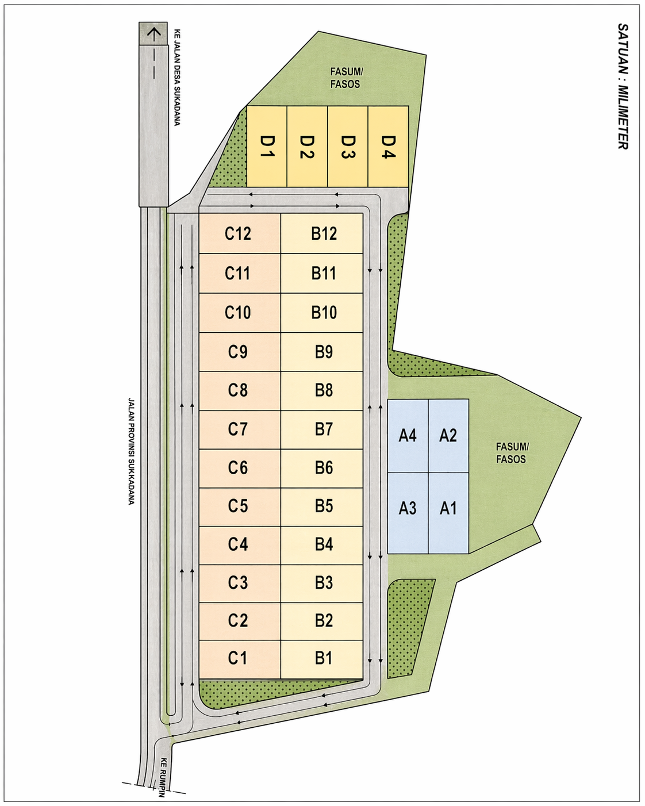
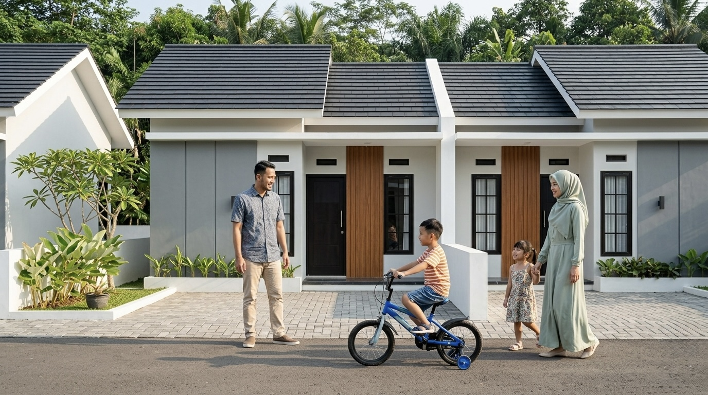
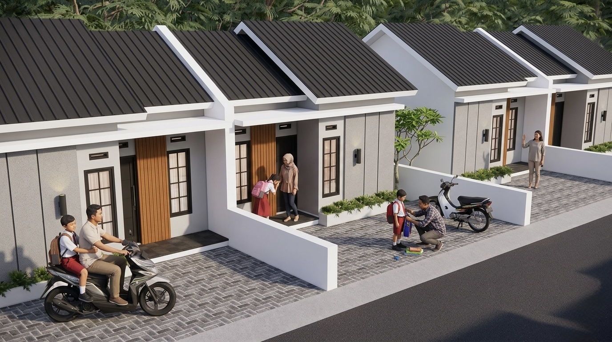

Developer terpercaya
Identitas pengembang jelas, alur administrasi resmi, dan komunikasi dibuat terbuka untuk calon pembeli.
Duta Kayong Permai - Rumah subsidi MBR Type 36
Hunian Type 36 yang nyaman, terjangkau, dan proses KPR dibantu dari awal sampai akad sesuai ketentuan bank.

Highlight proyek
Duta Kayong Permai dikembangkan oleh PT ANKA JAYA UTAMA di Jalan Tanjungpura RT 05 RW 02, Dusun Tanjung Belimbing, Pangkalan Buton, Sukadana, Kabupaten Kayong Utara. Informasi promo, cicilan, dan skema pembayaran tetap mengikuti ketentuan bank serta ketersediaan unit.
Keunggulan utama
Tim PT ANKA JAYA UTAMA mendampingi calon pembeli sejak konsultasi awal, cek syarat, pengajuan bank, hingga proses administrasi sesuai ketentuan yang berlaku.
Identitas pengembang jelas, alur administrasi resmi, dan komunikasi dibuat terbuka untuk calon pembeli.
Program ditujukan untuk masyarakat berpenghasilan rendah yang memenuhi syarat KPR subsidi.
Tim membantu menyiapkan dokumen, cek awal kelayakan, dan koordinasi proses dengan bank penyalur.
Sumber air bersih disiapkan mengikuti spesifikasi dan ketersediaan utilitas proyek.
Area proyek berada di kawasan berkembang dengan akses menuju fasilitas harian dan jalur utama.
Ketersediaan unit berubah mengikuti booking dan hasil verifikasi. Konsultasi lebih awal sangat disarankan.
Tentang PT ANKA JAYA UTAMA
PT ANKA JAYA UTAMA adalah developer yang berfokus pada pengembangan perumahan subsidi/MBR untuk membantu masyarakat memiliki hunian pertama yang layak, nyaman, dan sesuai ketentuan program pembiayaan rumah subsidi.
Melalui proyek Duta Kayong Permai, calon pembeli dapat memilih hunian Type 36 dengan suasana lingkungan asri, akses jalan mudah, air bersih, dan pendampingan proses KPR dari awal sampai akad apabila seluruh verifikasi terpenuhi.
Setiap calon pembeli diarahkan melalui proses yang jelas: konsultasi kebutuhan, cek syarat dasar, pemilihan unit, persiapan dokumen, pengajuan ke bank, hingga akad kredit dan serah terima apabila seluruh verifikasi terpenuhi.


Tipe rumah
Unit Type 36 dirancang fungsional untuk kebutuhan harian keluarga, dengan tata ruang sederhana, mudah dirawat, dan tetap nyaman sebagai hunian pertama.

Denah dan spesifikasi
Denah unit memperlihatkan tata ruang sederhana dengan 2 kamar, ruang keluarga, ruang tamu, toilet, dan teras. Gambar denah dapat dibuka lebih besar agar detail ukuran dan material lebih mudah dibaca.
Harga dan simulasi KPR
Angka di bawah adalah simulasi informatif. Harga final, uang muka, tenor, biaya administrasi, dan persetujuan KPR mengikuti ketentuan bank penyalur serta program subsidi yang berlaku.
Harga aktual mengikuti daftar harga proyek, ketersediaan unit, dan ketentuan rumah subsidi yang berlaku saat pengajuan.
Simulasi bukan persetujuan kredit. Bank akan melakukan pengecekan dokumen, penghasilan, riwayat pembiayaan, dan ketentuan program.
Syarat KPR subsidi
Setiap bank dapat meminta dokumen dan verifikasi tambahan. Tim marketing akan membantu pengecekan awal agar calon pembeli memahami peluang dan dokumen yang perlu disiapkan.
Isi Form Cek SyaratForm cek syarat
Data yang Anda isi dipakai sebagai bahan konsultasi awal. Keputusan KPR tetap mengikuti verifikasi resmi dari bank penyalur.
Khusus Anggota Polri / PNS Polri
PT ANKA JAYA UTAMA menyediakan jalur konsultasi dan pendampingan dokumen bagi Anggota Polri / PNS Polri yang berminat memiliki rumah subsidi di Perumahan Duta Kayong Permai, Sukadana, Kabupaten Kayong Utara.
Calon pembeli dari lingkungan Polri dapat melakukan konsultasi awal, memilih unit, melakukan booking, melengkapi dokumen, berkonsultasi mengenai PUM ASABRI, dan mengikuti proses pengajuan KPR subsidi sesuai ketentuan bank penyalur serta regulasi program perumahan subsidi yang berlaku.
Persetujuan KPR tetap menjadi kewenangan bank penyalur setelah proses verifikasi dokumen, penghasilan, riwayat pembiayaan, dan ketentuan program subsidi. PT ANKA JAYA UTAMA membantu pendampingan administrasi tanpa menjanjikan hasil di luar kewenangan bank.
Jalur informasi khusus
Anggota Polri / PNS Polri dapat berkonsultasi lebih awal untuk mengetahui unit tersedia, estimasi cicilan, dokumen KPR subsidi, skema perencanaan bayar, dan informasi PUM ASABRI sesuai ketentuan yang berlaku.
Ketersediaan unit, hasil verifikasi KPR, skema pembayaran, dan fasilitas PUM ASABRI tetap mengikuti ketentuan bank penyalur, ASABRI, dan instansi terkait.
Simulasi cashflow
Untuk membantu perencanaan keuangan Anggota Polri / PNS Polri, tim PT ANKA JAYA UTAMA dapat membantu membuat simulasi kemampuan bayar dengan pola pembayaran efektif 10-11 bulan dalam 1 tahun. Simulasi ini mempertimbangkan penghasilan, tunjangan, kewajiban berjalan, kesiapan administrasi, serta ketentuan bank penyalur.
Calon pembeli dapat berkonsultasi untuk menghitung estimasi kemampuan bayar berdasarkan penghasilan bulanan, tunjangan, dan kewajiban berjalan.
Skema 10-11 bulan/tahun digunakan sebagai pendekatan perencanaan cashflow tahunan agar calon pembeli memahami kesiapan pembayaran sebelum proses KPR.
Jika KPR disetujui, kewajiban pembayaran tetap mengacu pada perjanjian kredit, jadwal angsuran, sistem auto-debit, dan kebijakan bank penyalur.
Calon pembeli disarankan berkonsultasi terlebih dahulu sebelum booking agar memahami estimasi cicilan, kebutuhan dokumen, dan kesiapan administrasi.
Simulasi bayar 10-11 bulan dalam 1 tahun merupakan alat bantu perencanaan kemampuan bayar, bukan perubahan sepihak terhadap kewajiban angsuran bank. Ketentuan pembayaran tetap mengikuti akad kredit dan kebijakan bank penyalur.
Informasi PUM ASABRI
Bagi Anggota Polri / PNS Polri yang merupakan peserta ASABRI, informasi Pinjaman Uang Muka atau PUM ASABRI dapat dikonsultasikan sebagai bagian dari perencanaan pembelian rumah, sepanjang memenuhi ketentuan peserta, dokumen, dan mekanisme yang berlaku.
PUM ASABRI diajukan oleh peserta/pemohon sesuai syarat kepesertaan dan dokumen yang berlaku.
Dalam proses administrasi, pemohon menyiapkan buku tabungan atau rekening pribadi atas nama pemohon. Mekanisme pencairan dan penggunaan dana tetap mengikuti ketentuan ASABRI, mitra bayar, bank penyalur, dan instansi terkait.
Dana PUM ASABRI dapat menjadi bagian dari perencanaan pembiayaan uang muka atau kebutuhan administrasi sesuai ketentuan program dan hasil verifikasi.
Persetujuan PUM ASABRI tidak otomatis. Proses tetap mengikuti persyaratan peserta, status kepesertaan, dokumen, serta kebijakan ASABRI/instansi terkait.
Informasi PUM ASABRI pada website bersifat informasi awal. Calon pemohon tetap perlu memastikan ketentuan terbaru melalui ASABRI, satuan kerja, bendahara, bank penyalur, atau pihak terkait.
Tahapan pendaftaran
Alur berikut membantu calon pembeli dari lingkungan Polri memahami langkah konsultasi, booking, pengajuan KPR subsidi, dan pendampingan administrasi secara lebih terarah.
Calon pembeli menghubungi tim marketing PT ANKA JAYA UTAMA untuk mendapatkan informasi unit, lokasi, harga subsidi, simulasi cicilan, skema pembayaran, dan syarat awal KPR.
Tim membantu mencatat kategori calon pembeli, apakah Anggota Polri, PNS Polri, atau umum, termasuk status menikah, domisili, penghasilan, dan rencana pengajuan KPR.
Calon pembeli memilih blok/unit yang masih tersedia berdasarkan siteplan dan informasi terbaru dari tim marketing.
Calon pembeli melakukan booking unit sebesar Rp500.000 sebagai tanda minat awal terhadap unit yang dipilih, mengikuti prosedur administrasi perusahaan dan ketersediaan unit.
Calon pembeli menyiapkan dokumen pribadi, keluarga, kepegawaian, slip/daftar gaji, mutasi rekening, dan dokumen tambahan sesuai permintaan bank.
Jika pemohon adalah peserta ASABRI dan ingin berkonsultasi mengenai PUM ASABRI, tim memberikan arahan dokumen awal dan mengingatkan bahwa mekanisme tetap mengikuti ketentuan ASABRI dan instansi terkait.
Tim membantu melakukan pengecekan awal dokumen sebelum berkas diajukan kepada bank penyalur.
Berkas diajukan kepada bank penyalur untuk proses verifikasi, analisa, dan keputusan pembiayaan.
Jika disetujui bank dan administrasi terpenuhi, calon pembeli melanjutkan proses akad kredit sesuai jadwal dan ketentuan bank/notaris.
Serah terima unit dilakukan setelah proses administrasi, akad, dan ketentuan proyek terpenuhi sesuai prosedur yang berlaku.
Siapkan dokumen berikut untuk mempercepat proses pengecekan awal dan pengajuan KPR subsidi.
Bank penyalur, ASABRI, atau instansi terkait dapat meminta dokumen tambahan sesuai hasil verifikasi dan kebijakan yang berlaku.
Checklist ini membantu pemohon menyiapkan bahan konsultasi awal sebelum proses diarahkan sesuai ketentuan pihak terkait.
Checklist ini bersifat panduan awal. Ketentuan final tetap mengikuti ASABRI, satuan kerja, bendahara, mitra bayar, dan bank penyalur.
Hubungi tim PT ANKA JAYA UTAMA untuk konsultasi awal, pengecekan dokumen, informasi unit tersedia, simulasi skema bayar, konsultasi PUM ASABRI, dan jadwal survei lokasi.
Lokasi
Komplek Duta Kayong Permai
Jalan Tanjungpura RT 05 RW 02, Dusun Tanjung Belimbing, Pangkalan Buton, Kabupaten Kayong Utara, Kalimantan Barat.
Lokasi memiliki akses jalan mudah, lingkungan asri, dan cocok untuk keluarga muda yang ingin memiliki rumah subsidi pertama dengan proses KPR yang dibantu sesuai ketentuan bank.
Siteplan
Siteplan asli proyek ditampilkan penuh agar calon pembeli dapat melihat posisi blok A, B, C, D, akses jalan, serta area fasilitas umum/fasilitas sosial. Klik gambar untuk membuka ukuran besar.

Galeri
Galeri menggunakan aset proyek yang Anda sediakan, termasuk render rumah, poster pemasaran, denah unit, dan siteplan kawasan.



Dokumentasi lapangan
Lihat dokumentasi perkembangan pembangunan Perumahan Duta Kayong Permai secara berkala. PT ANKA JAYA UTAMA menampilkan progres lapangan sebagai bentuk transparansi kepada calon konsumen sebelum melakukan survei, booking, dan proses KPR.
Dokumentasi progres pembangunan rumah subsidi Sukadana ini membantu calon konsumen melihat kondisi rumah subsidi Kayong Utara dan perumahan MBR Kayong Utara di koridor Jalan Poros Sukadana Ketapang secara lebih nyata.
Foto progres akan segera diperbarui.
Jadwalkan survei lokasi bersama tim marketing PT ANKA JAYA UTAMA.
Proses pembelian
Diskusikan kebutuhan, budget, dan rencana survei lokasi.
Cek ketersediaan blok, posisi unit, dan dokumen proyek.
Tim membantu mengecek dokumen awal sebelum pengajuan bank.
Booking dilakukan sesuai prosedur resmi dan ketersediaan unit.
Bank melakukan verifikasi penghasilan, dokumen, dan kelayakan.
Dilakukan setelah persetujuan bank dan administrasi terpenuhi.
Legalitas dan kepercayaan
Kami menghindari janji yang tidak sesuai ketentuan. Persetujuan KPR tetap menjadi kewenangan bank penyalur setelah verifikasi.
PT ANKA JAYA UTAMA sebagai pengembang proyek Duta Kayong Permai di Pangkalan Buton, Kalimantan Barat.
Calon pembeli dapat meminta data blok unit, siteplan, spesifikasi, progres, dan ketersediaan unit terbaru.
Dokumen perizinan dan legalitas proyek dikonfirmasi melalui tim marketing sesuai dokumen resmi yang tersedia.
Pengajuan dibantu dari persiapan berkas sampai proses bank, tanpa menjanjikan hasil di luar kewenangan bank.
FAQ
Jika ada pertanyaan lain, tim kami siap membantu melalui WhatsApp.
Tanya via WhatsAppYa, unit dipasarkan sebagai rumah subsidi/MBR. Calon pembeli tetap harus memenuhi persyaratan program dan verifikasi bank penyalur.
Tidak ada jaminan persetujuan. Tim membantu proses dan persiapan dokumen, sedangkan keputusan akhir mengikuti analisa bank.
Umumnya KTP, KK, NPWP, dokumen pekerjaan atau usaha, slip gaji atau keterangan penghasilan, dan dokumen tambahan sesuai permintaan bank.
Bisa. Anda dapat mengatur jadwal survei lokasi dengan tim marketing untuk melihat akses, lingkungan, dan ketersediaan unit.
Estimasi cicilan bergantung pada harga unit, uang muka, tenor, skema subsidi, dan ketentuan bank. Gunakan simulasi awal di website atau konsultasikan ke tim.
Ketersediaan unit dapat berubah karena booking dan proses verifikasi. Silakan hubungi tim untuk cek stok terbaru sebelum survei.
Bisa mengajukan sepanjang memenuhi syarat program rumah subsidi, ketentuan bank penyalur, dan hasil verifikasi dokumen.
Tidak. Booking merupakan tanda minat awal terhadap unit yang tersedia. Persetujuan KPR tetap mengikuti verifikasi dan keputusan bank penyalur.
Dokumen utama meliputi KTP, Kartu Keluarga, Buku Nikah jika sudah menikah, Kartu Anggota Polri/PNS Polri, SK Pengangkatan Pertama, SK Pangkat Terakhir, slip/daftar gaji terakhir, mutasi rekening 3 bulan terakhir, serta dokumen tambahan sesuai permintaan bank.
Bisa. Tim dapat membantu memberikan informasi awal dokumen dan alur konsultasi PUM ASABRI. Persetujuan dan mekanisme pencairan tetap mengikuti ketentuan ASABRI, satuan kerja, bendahara, mitra bayar, dan bank terkait.
Dalam administrasi PUM ASABRI, pemohon menyiapkan buku tabungan atau rekening pribadi atas nama pemohon. Mekanisme pencairan dan penggunaan dana tetap mengikuti ketentuan ASABRI, mitra bayar, bank penyalur, dan instansi terkait.
Skema tersebut merupakan simulasi perencanaan kemampuan bayar tahunan untuk membantu calon pembeli menghitung kesiapan finansial. Kewajiban angsuran tetap mengikuti akad kredit dan ketentuan bank penyalur.
Calon pembeli dapat menjadwalkan survei lokasi bersama tim marketing untuk melihat lingkungan, akses, siteplan, dan informasi unit tersedia.
Konsultasi sekarang
Mulai dari cek syarat, tanya unit, sampai jadwal survei lokasi. Tim PT ANKA JAYA UTAMA siap membantu dengan informasi yang jelas dan sesuai ketentuan.